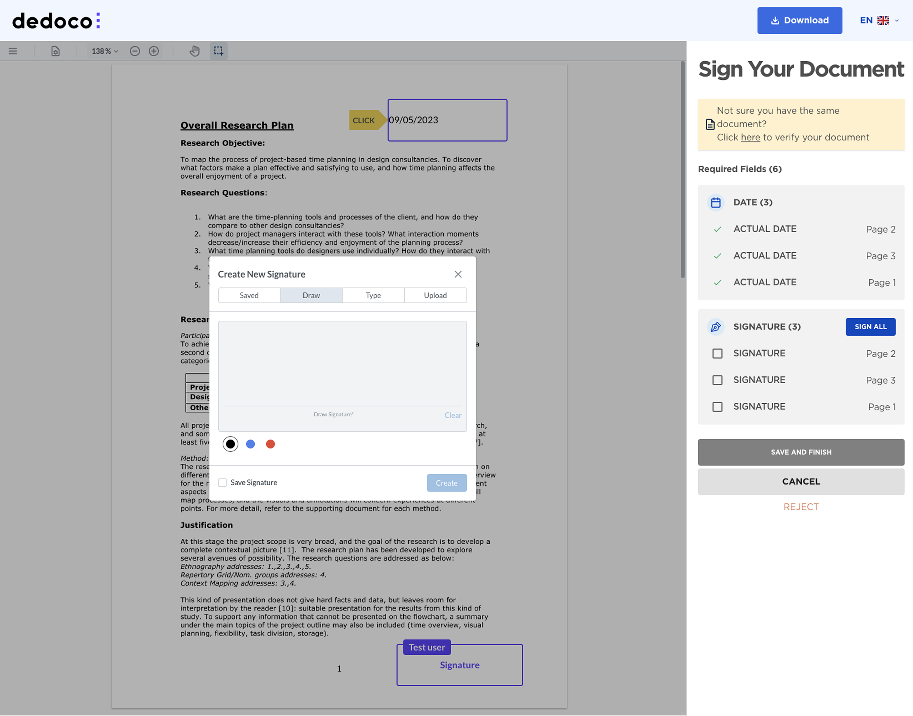
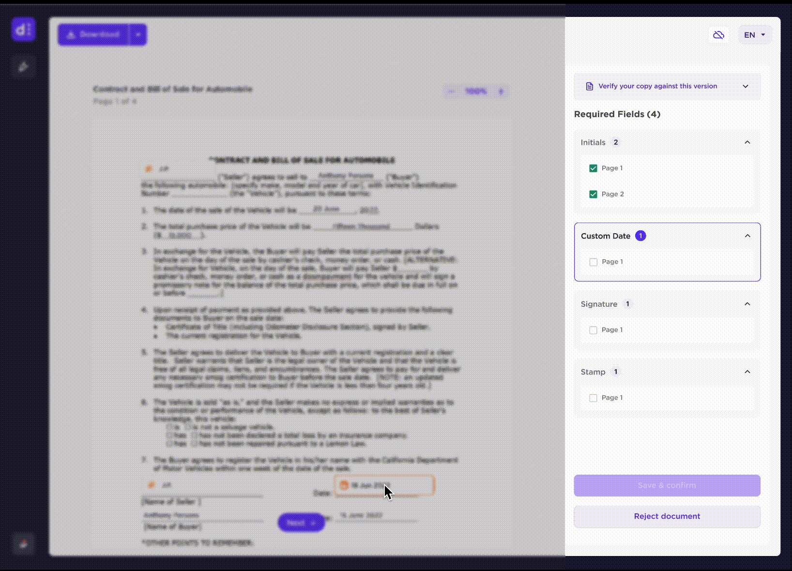
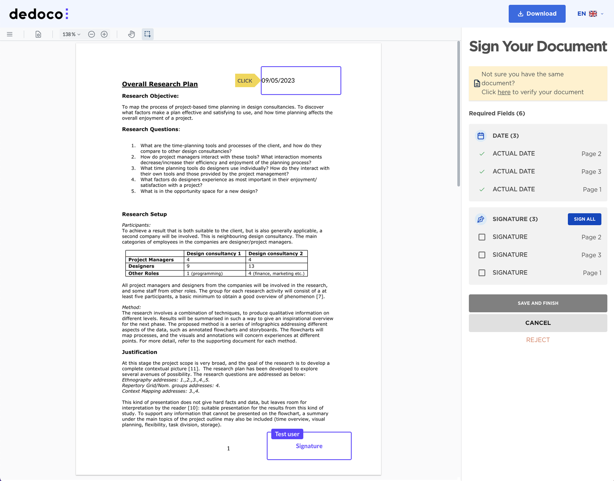
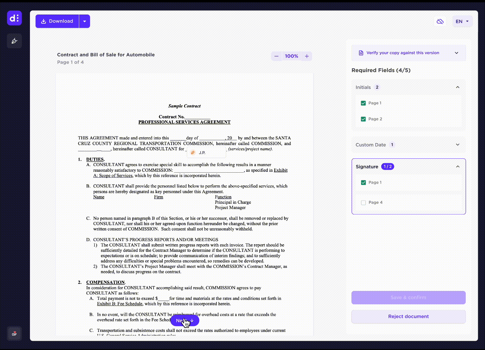

Rethinking secure digital document signing.
How might we reduce drop-off rates in a digital signing flow , while bringing the product in line with a brand built around trust?
I led design end-to-end to deliver dSign, from supplementary research through to shipping a redesigned flow with a new component library. Drop-off mid-signing reduced, support tickets decreased, and the product shipped with a visual identity that could hold up to a Singaporean bank contract.
- User drop-off mid-signing was generating support tickets and eroding confidence in the product.
- A full rebrand was underway, requiring the product UI to catch up to the new visual identity.
- Dedoco was actively pursuing a contract with a Singaporean bank, raising the stakes on first impressions.
Sidebar-first navigation
The sidebar displayed redundant content during signing while the modal overlay blocked the document. Moving all actions to the sidebar created a clear separation between the document and required actions, letting users view and sign concurrently. Centralising actions in collapsible menus meant users could see all required tasks upfront and track progress without switching contexts.


Direct access to required actions
Users had to scroll through the document to locate required fields. Clicking sidebar items jumped to the field location but didn't open the signing interface. Opening the signing modal directly from sidebar items removed the extra click. Auto-advance button skips the sidebar entirely, taking users straight to the next unsigned field in document order.




A detailed walkthrough is available on request.